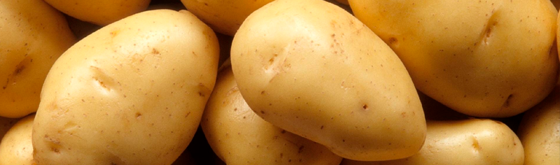

A História da Batata Frita
Provavelmente você já comeu batata frita em alguma lanchonete, acompanhando hambúrgueres ou até mesmo sozinha. Mas talvez você não saiba que existe uma grande polêmica sobre a verdadeira origem desse prato tão amado no mundo todo. Pois acompanhe esse artigo para descobrir de onde veio essa delícia crocante.
A primeira versão
Muitos acreditam que a batata frita nasceu na França, o que até explicaria o nome “French Fries”. Porém, registros históricos apontam que sua verdadeira origem pode ter sido na Bélgica, no século XVII.

Conta-se que os belgas costumavam fritar peixes como prato típico. Mas quando os rios congelaram durante um inverno rigoroso, eles cortaram batatas em formato de peixe e fritaram, criando sem querer as primeiras batatas fritas.
A popularização
Apesar da possível origem belga, a França ajudou a popularizar o prato. Os vendedores ambulantes de Paris, no século XVIII, vendiam batatas fritas nas ruas, chamando a atenção de turistas e moradores locais.
Foi assim que a fama da batata frita se espalhou pelo mundo, principalmente depois de soldados americanos experimentarem o prato na Primeira Guerra Mundial e levarem a ideia para os Estados Unidos.
De lá para cá, ela ganhou diferentes cortes, sabores e até acompanhamentos — das clássicas “french fries” às “chips” inglesas e às versões gourmet com temperos variados.
Então é isso! Espero que você tenha gostado do nosso artigo com essa curiosidade sobre a batata frita, um prato simples, mas que conquistou o mundo.